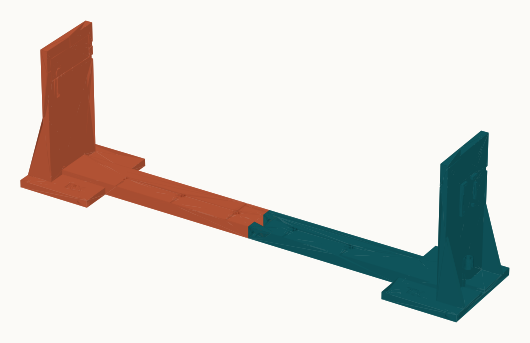
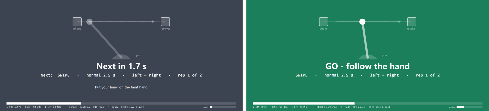

WaveSense
Seeing hands with Wi-Fi: gesture control from channel measurements, running on an ESP32-S3
WaveSense is a music controller you use by moving your hand between two small Wi-Fi boards. One board sends packets, the other measures how your hand changed them, and a model on that board picks the gesture. Our prototype gets 88% on three gestures within one recording session, but only about 55% on a new one. Fixing that is the project.
01How Wi-Fi sees a hand
Wi-Fi splits each channel into 64 narrow subcarriers. Every packet starts with a pattern the receiver already knows, so it can measure how each subcarrier was weakened and delayed on the way. That measurement is called Channel State Information (CSI), and the ESP32 lets us read it.
The signal reaches the receiver along many paths at once, and the copies add up at some subcarriers and cancel at others. A hand adds new reflections and changes that pattern. With a 12 cm wavelength, a few centimeters of movement is enough to see.

02What we're building
A transmitter board sends 100 packets a second to a receiver 34 cm away. The receiver recognizes three gestures: a swipe for next track, a swipe and back for previous, and a held palm to pause. Left and right swipes look the same to a single link, so our gestures differ in shape instead. The model has to run on the ESP32-S3 in real time and ignore people just moving around.
03What works so far
The firmware streams CSI at the full 100 packets per second. We designed a 3D-printed stand that holds the antennas in the same spot every session (Figure 3), and a recording app that shows an animated hand to follow and labels every trial (Figure 4).


Each gesture leaves a different mark in the CSI (Figure 5).

Simple classifiers get 71–88% within a session but only 54–58% on a different one (Figure 6). Our newest session scored lower partly because it recorded at half the usual packet rate.

04What's next
Consistency is the hard part. Next we swap the phone hotspot we've been recording with for a dedicated ESP32 transmitter, record many more sessions across all four of us, and train a small neural network that fits on the ESP32-S3.